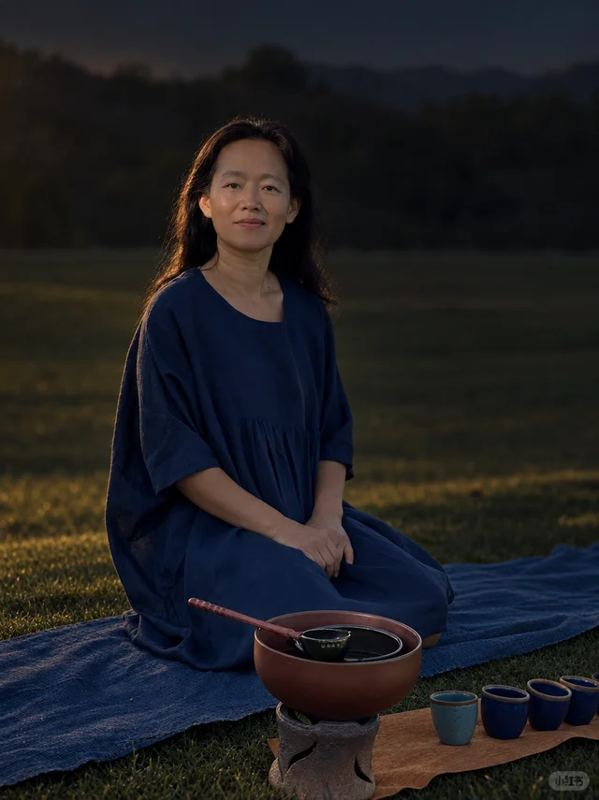

01 — Tea Living
茶
以茶入静，以茶待人，以茶安身。
茶，是苍岭清舍的心。从山野茶席、松下煮茶，到东方待客之道，茶在这里不是技巧，而是一种让人慢下来的生活方式。
Tea is the heart of 苍岭清舍. From mountain tea gatherings to quiet tea rituals under the pine, tea becomes a way to welcome others and return to inner calm.